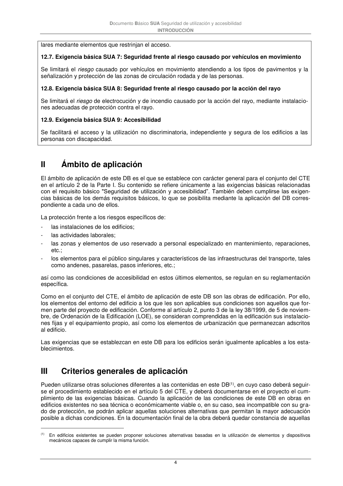

DB-SUA Seguridad de utilización y accesibilidad · edición 2022-06-14 · capa oficial
Documento DB-SUA-oficial · SHA-256 del PDF 3cfb5bbb135e8f02faebd8b844e03e8947994c18d4c9e675a7d2aa37d1cd5958
Copia fiel del PDF fuente · Fuente oficial
Ficha de la disposición en la fuente oficial
Formatos: JSON del segmento · Markdown
III Criterios generales de aplicación Criterios generales de aplicación Pueden utilizarse otras soluciones diferentes a las contenidas en este DB(1), en cuyo caso deberá seguir- se el procedimiento establecido en el artículo 5 del CTE, y deberá documentarse en el proyecto el cum- plimiento de las exigencias básicas. Cuando la aplicación de las condiciones de este DB en obras en edificios existentes no sea técnica o económicamente viable o, en su caso, sea incompatible con su gra- do de protección, se podrán aplicar aquellas soluciones alternativas que permitan la mayor adecuación posible a dichas condiciones. En la documentación final de la obra deberá quedar constancia de aquellas (1) En edificios existentes se pueden proponer soluciones alternativas basadas en la utilización de elementos y dispositivos mecánicos capaces de cumplir la misma función. Documento Básico SUA Seguridad de utilización y accesibilidad INTRODUCCIÓN 5 limitaciones al uso del edificio que puedan ser necesarias como consecuencia del grado final de adecua- ción alcanzado y que deban ser tenidas en cuenta por los titulares de las actividades. Cuando se cita una disposición reglamentaria en este DB debe entenderse que se hace referencia a la versión vigente en el momento en el que se aplica el mismo. Cuando se cita una norma UNE, UNE-EN o UNE-EN ISO debe entenderse que se hace referencia a la versión que se indica, aun cuando exista una versión posterior, salvo en el caso de normas armonizadas UNE-EN que sean transposición de normas EN cuyas referencias hayan sido publicadas en el Diario Oficial de la Unión Europea, en el marco de la aplicación del Reglamento (UE) nº 305/2011 del Parlamento Europeo y del Consejo, de 9 de marzo de 2011, por el que se establecen condiciones armonizadas para la comercialización de productos de cons- trucción y se deroga la Directiva 89/106/CEE del Consejo, en cuyo caso la cita se deberá relacionar con la última Comunicación de la Comisión que incluya dicha referencia. En el caso de normas de métodos de ensayo referenciadas en las normas armonizadas, debe aplicarse la versión incluida en las normas armonizadas UNE-EN citadas anteriormente. Las normas recogidas en este DB podrán ser sustituidas por otras de las utilizadas en cualquiera de los otros Estados miembros de la Unión Europea, o que sean parte del Acuerdo sobre el Espacio Económico Europeo, y en aquellos Estados que tengan un acuerdo de asociación aduanera con la Unión Europea, siempre que se demuestre que poseen especificaciones técnicas equivalentes. A efectos de este DB deben tenerse en cuenta los siguientes criterios de aplicación: 1 Los edificios o zonas cuyo uso previsto no se encuentre entre los definidos en el Anejo SUA A de este DB deberán cumplir, salvo indicación en otro sentido, las condiciones particulares del uso al que mejor puedan asimilarse. 2 Cuando un cambio de uso afecte únicamente a parte de un edificio o cuando se realice una amplia- ción a un edificio existente, este DB deberá aplicarse a dicha parte, y disponer cuando sea exigible según la Sección SUA 9, al menos un itinerario accesible que la comunique con la vía pública. 3 En obras de reforma en las que se mantenga el uso, este DB debe aplicarse a los elementos del edificio modificados por la reforma, siempre que ello suponga una mayor adecuación a las condicio- nes de seguridad de utilización y accesibilidad establecidas en este DB. 4 En todo caso, las obras de reforma no podrán menoscabar las condiciones de seguridad de utiliza- ción y accesibilidad preexistentes, cuando éstas sean menos estrictas que las contempladas en este DB.
